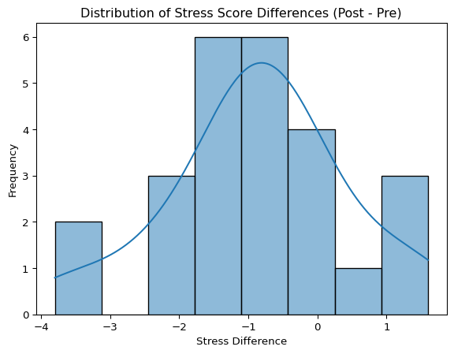
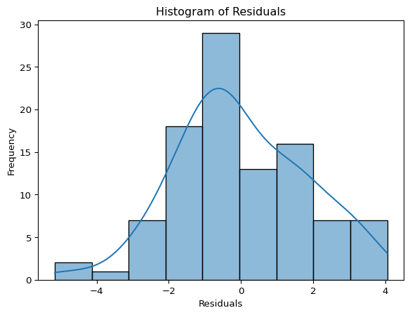

앞선 2장에서는 데이터를 준비하고 탐색하는 기본적인 기술을 익혔습니다. 이제부터는 수집된 데이터를 바탕으로 구체적인 연구 질문에 답하는 통계적 추론의 세계로 나아갑니다. 제3부에서는 여러 집단 간의 차이나 변수 간의 관계를 통계적으로 검증하는 방법들을 다룹니다.
그 첫 번째 단계로, 사회과학 연구에서 매우 빈번하게 사용되는 독립표본 t-검정(Independent Samples t-test)에 대해 알아봅니다. 이 검정은 서로 독립적인 두 집단 간에 특정 연속형 변수의 평균에 통계적으로 유의미한 차이가 있는지를 확인하고자 할 때 사용됩니다.
예를 들어, 다음과 같은 연구 질문에 답하기 위해 독립표본 t-검정을 사용할 수 있습니다.
성별(남성 vs 여성)에 따라 평균 소득에 차이가 있는가?
특정 정책 지지 집단과 반대 집단 간에 평균 정부 신뢰도 점수에 차이가 있는가?
실험 처치를 받은 집단(실험집단)과 받지 않은 집단(통제집단) 간에 평균 문제 해결 능력 점수에 차이가 있는가?
독립표본 t-검정은 관찰된 두 표본 평균 간의 차이가 단순히 우연(표본 추출 오차)에 의한 것인지, 아니면 실제 모집단에서도 의미 있는 차이가 존재한다고 볼 수 있는지 통계적으로 판단하는 근거를 제공합니다.
📌 핵심 요약
독립표본 t-검정은 서로 독립적인 두 집단 간의 연속형 변수 평균 차이를 통계적으로 검증하는 방법입니다. 이 절에서는 t-검정의 기본 원리(가설 설정, t-통계량, p-값), 주요 가정(독립성, 정규성, 등분산성), 파이썬 scipy.stats 라이브러리를 이용한 구현 방법, 가정 검토(Shapiro-Wilk, Levene 검정), Welch’s t-검정의 활용, 결과 해석, 효과 크기(Cohen’s d) 계산 및 해석, 그리고 결과 보고 방법까지 학습합니다.
3.1.1 3.1.1 독립표본 t-검정의 원리: 가설 설정과 검정 통계량
독립표본 t-검정은 가설 검증의 틀 안에서 이루어집니다.
가설 설정:
귀무가설 (Null Hypothesis, \(H_0\)): 두 집단의 모집단 평균은 같다 (\(H_0: \mu_1 = \mu_2\) 또는 \(H_0: \mu_1 - \mu_2 = 0\)). 즉, 우리가 표본에서 관찰한 평균 차이는 우연에 의한 것이다.
대립가설 (Alternative Hypothesis, \(H_1\)): 두 집단의 모집단 평균은 다르다 (\(H_1: \mu_1 \neq \mu_2\)). 이 가설은 연구자가 입증하고자 하는 내용으로, 표본 평균 차이가 우연이라고 보기에는 너무 크다는 것을 의미합니다. 이는 양측 검정(Two-tailed test)에 해당합니다.
만약 연구자가 특정 방향의 차이(예: 집단 1이 집단 2보다 평균이 클 것이다)를 예측한다면 단측 검정(\(H_1: \mu_1 > \mu_2\) 또는 \(H_1: \mu_1 < \mu_2\))을 설정할 수도 있지만, 특별한 근거가 없다면 일반적으로 양측 검정을 사용합니다.
검정 통계량 (Test Statistic, t-value):
t-검정은 두 표본 평균 간의 차이를 표준 오차(Standard Error)로 나눈 값인 t-통계량을 계산합니다. 이는 관찰된 평균 차이가 그룹 내 변동성(오차)에 비해 얼마나 큰지를 나타내는 표준화된 값입니다.
개념적으로 t-값은 다음과 같이 표현될 수 있습니다: \(t = \frac{(\text{두 표본 평균의 차이}) - (\text{귀무가설 하에서의 평균 차이, 보통 0})}{(\text{두 평균 차이의 표준 오차})}\)\(t = \frac{(\bar{x}_1 - \bar{x}_2)}{SE_{(\bar{x}_1 - \bar{x}_2)}}\)
t-값의 절댓값이 클수록 두 집단 간 평균 차이가 우연히 발생했을 가능성이 작아집니다.
p-값 (p-value):
p-값은 귀무가설(\(H_0\))이 참이라고 가정할 때, 우리가 표본에서 계산한 t-통계량 값 또는 그보다 더 극단적인 값이 관찰될 확률입니다.
p-값이 매우 작다(예: 0.05 미만)는 것은, 귀무가설이 맞다면 현재와 같은 표본 결과가 나타나기 매우 어렵다는 것을 의미합니다.
의사 결정:
미리 설정한 유의수준(Significance level, \(\alpha\))과 p-값을 비교하여 귀무가설 기각 여부를 결정합니다. 사회과학에서는 보통 \(\alpha = 0.05\) (5%)를 사용합니다.
p-값 < \(\alpha\) : 귀무가설(\(H_0\))을 기각하고 대립가설(\(H_1\))을 채택합니다. 즉, 두 집단 간 평균에 통계적으로 유의미한 차이가 있다고 결론 내립니다.
p-값 \(\ge\)\(\alpha\) : 귀무가설(\(H_0\))을 기각하지 못합니다(채택하는 것이 아님). 즉, 두 집단 간 평균 차이가 통계적으로 유의미하다는 충분한 근거를 찾지 못했다고 결론 내립니다.
3.1.2 3.1.2 독립표본 t-검정의 가정
독립표본 t-검정 결과를 신뢰하기 위해서는 몇 가지 가정이 충족되어야 합니다.
독립성 (Independence of Observations): 한 집단 내의 관측치들은 서로 독립적이어야 하며, 두 집단 간의 관측치들도 서로 독립적이어야 합니다. 이는 주로 연구 설계 및 표본 추출 방법과 관련됩니다. (예: 무작위 할당, 무작위 표본 추출)
정규성 (Normality): 종속변수는 각 집단별로 정규분포를 따라야 합니다.
확인 방법: 각 집단별 히스토그램, Q-Q 플롯 확인(2.4절), 또는 정규성 검정(예: Shapiro-Wilk test) 수행.
견고성(Robustness): 표본 크기가 충분히 크면(예: 각 집단별 30 이상), 중심극한정리(Central Limit Theorem)에 의해 t-검정은 정규성 가정 위반에 비교적 덜 민감합니다.
등분산성 (Homogeneity of Variances, Homoscedasticity): 두 집단의 모집단 분산이 동일해야 합니다.
확인 방법: Levene의 등분산 검정(Levene’s test) 수행.
중요성: 전통적인 Student’s t-test는 이 가정을 요구하지만, 이 가정이 충족되지 않을 때 사용할 수 있는 Welch’s t-test가 있습니다. Welch’s t-test는 등분산성 가정을 요구하지 않으며, 등분산성이 충족될 때에도 Student’s t-test와 유사한 결과를 제공하므로, 많은 경우 Welch’s t-test를 기본으로 사용하는 것이 권장됩니다.
3.1.3 3.1.3 파이썬을 이용한 독립표본 t-검정 (scipy.stats)
파이썬의 scipy.stats 모듈은 독립표본 t-검정을 수행하는 ttest_ind 함수를 제공합니다. 2.5절에서 사용한 df_practice 데이터를 이용하여 성별(Gender)에 따른 소득(Income) 평균 차이가 있는지 검정해 보겠습니다.
1. 데이터 준비: 먼저, 비교할 두 집단(남성, 여성)의 Income 데이터를 각각 추출합니다.
import pandas as pdimport numpy as npfrom scipy import stats # t-test 및 관련 검정 함수 포함import matplotlib.pyplot as plt # 가정 검토 시각화용 (선택적)import seaborn as sns # 가정 검토 시각화용 (선택적)# CSV 파일로부터 데이터 불러오기# 파일 경로는 실제 파일 위치에 맞게 수정해야 합니다.try:# csv_filepath = 'path/to/your/data_process.csv' # 실제 파일 경로로 수정 csv_filepath ='data_process.csv'# 2.5절에서 저장한 파일과 동일 디렉토리에 있다고 가정 df_processed = pd.read_csv(csv_filepath, index_col=0) # index_col=0 추가print("데이터 불러오기 성공!")print("\n--- 불러온 데이터 확인 (처음 5행) ---")print(df_processed.head())# 데이터 타입 확인 (CSV 로딩 후 타입 변경 가능성 있음)print("\n--- 불러온 데이터 정보 확인 ---") df_processed.info()# Education 변수 순서형 범주 타입 재지정 (필요시)ifnot pd.api.types.is_categorical_dtype(df_processed['Education']) ornot df_processed['Education'].cat.ordered:print("\nEducation 변수 타입을 순서형 범주(Ordered Categorical)로 재지정합니다.") edu_order = ['High School', 'Bachelor', 'Master', 'PhD'] df_processed['Education'] = pd.Categorical(df_processed['Education'], categories=edu_order, ordered=True) df_processed.info() # 타입 변경 확인exceptFileNotFoundError:print(f"오류: '{csv_filepath}' 파일을 찾을 수 없습니다.")print("2.5절에서 'data_process.csv' 파일이 정상적으로 저장되었는지, 파일 경로가 올바른지 확인해주세요.")# 예제 진행을 위해 중단 (실제 사용 시에는 파일 로딩 필수)raise# 오류 발생시키고 중단# 성별에 따른 Income 데이터 분리 (이제 df_processed 사용)male_income = df_processed[df_processed['Gender'] =='Male']['Income']female_income = df_processed[df_processed['Gender'] =='Female']['Income']print(f"\nMale Income 데이터 개수: {len(male_income)}")print(f"Female Income 데이터 개수: {len(female_income)}")
데이터 불러오기 성공!
--- 불러온 데이터 확인 (처음 5행) ---
ID Age Gender Education Income Wellbeing Social_Participation \
0 1 58.0 Female High School 4666.08 4.1 2
1 2 48.0 Female PhD 5308.40 0.4 4
2 3 34.0 Female Bachelor 3159.16 8.5 2
3 4 62.0 Female Bachelor 8500.52 10.4 2
4 5 27.0 Female Master 3699.80 5.9 2
Political_View
0 7
1 6
2 2
3 5
4 2
--- 불러온 데이터 정보 확인 ---
<class 'pandas.core.frame.DataFrame'>
Index: 100 entries, 0 to 99
Data columns (total 8 columns):
# Column Non-Null Count Dtype
--- ------ -------------- -----
0 ID 100 non-null int64
1 Age 100 non-null float64
2 Gender 100 non-null object
3 Education 100 non-null object
4 Income 100 non-null float64
5 Wellbeing 100 non-null float64
6 Social_Participation 100 non-null int64
7 Political_View 100 non-null int64
dtypes: float64(3), int64(3), object(2)
memory usage: 7.0+ KB
Education 변수 타입을 순서형 범주(Ordered Categorical)로 재지정합니다.
<class 'pandas.core.frame.DataFrame'>
Index: 100 entries, 0 to 99
Data columns (total 8 columns):
# Column Non-Null Count Dtype
--- ------ -------------- -----
0 ID 100 non-null int64
1 Age 100 non-null float64
2 Gender 100 non-null object
3 Education 100 non-null category
4 Income 100 non-null float64
5 Wellbeing 100 non-null float64
6 Social_Participation 100 non-null int64
7 Political_View 100 non-null int64
dtypes: category(1), float64(3), int64(3), object(1)
memory usage: 6.5+ KB
Male Income 데이터 개수: 50
Female Income 데이터 개수: 50
C:\Users\voidm\AppData\Local\Temp\ipykernel_34772\1887977693.py:23: DeprecationWarning:
is_categorical_dtype is deprecated and will be removed in a future version. Use isinstance(dtype, pd.CategoricalDtype) instead
2. 가정 검토 (선택적이지만 권장):
정규성 검토 (Shapiro-Wilk Test): 각 집단의 Income 데이터가 정규분포를 따르는지 확인합니다. 귀무가설(\(H_0\))은 ’데이터가 정규분포를 따른다’입니다.
# 남성 Income 정규성 검정 shapiro_male = stats.shapiro(male_income)print(f"Shapiro-Wilk Test (Male Income): Statistic={shapiro_male.statistic:.3f}, p-value={shapiro_male.pvalue:.3f}")# 여성 Income 정규성 검정 shapiro_female = stats.shapiro(female_income)print(f"Shapiro-Wilk Test (Female Income): Statistic={shapiro_female.statistic:.3f}, p-value={shapiro_female.pvalue:.3f}")
Shapiro-Wilk Test (Male Income): Statistic=0.990, p-value=0.953
Shapiro-Wilk Test (Female Income): Statistic=0.989, p-value=0.931
* **해석:** 만약 p-값이 유의수준(예: 0.05)보다 크면, 정규분포를 따른다는 귀무가설을 기각할 수 없으므로 정규성 가정을 만족한다고 볼 수 있습니다. 만약 p-값이 0.05보다 작으면 정규성 가정이 위배될 수 있으나, 표본 크기가 충분히 크다면(예: 각 그룹 30 이상) t-검정은 여전히 사용 가능할 수 있습니다. 시각적 확인(히스토그램, Q-Q 플롯)을 병행하는 것이 좋습니다.
등분산성 검토 (Levene’s Test): 두 집단의 분산이 동일한지 확인합니다. 귀무가설(\(H_0\))은 ’두 집단의 분산은 같다’입니다.
# 등분산성 검정 (Levene's Test) levene_test = stats.levene(male_income, female_income)print(f"\nLevene's Test for Equal Variances: Statistic={levene_test.statistic:.3f}, p-value={levene_test.pvalue:.3f}")
Levene's Test for Equal Variances: Statistic=0.013, p-value=0.910
* **해석:** 만약 p-값이 유의수준(예: 0.05)보다 크면, 등분산성 가정을 만족한다고 볼 수 있습니다 (`equal_var=True` 사용 가능). 만약 p-값이 0.05보다 작으면 등분산성 가정이 위배되므로 `equal_var=False` (Welch's t-test)를 사용해야 합니다.
3. t-검정 수행:
scipy.stats.ttest_ind() 함수를 사용합니다. equal_var 파라미터 설정이 중요합니다. Levene 검정 결과와 관계없이, 일반적으로 equal_var=False (Welch’s t-test)를 사용하는 것이 더 안전하고 권장됩니다.
계산된 t-통계량과 p-값을 바탕으로 결론을 내립니다. 유의수준 \(\alpha = 0.05\)를 기준으로 판단합니다.
해석 (예시 결과 기반): 만약 위 코드 실행 결과 p_value가 0.05보다 작게 나왔다면 (예: p_value = 0.021), 다음과 같이 해석합니다.
“독립표본 t-검정(Welch’s) 결과, 성별에 따른 평균 소득에는 통계적으로 유의미한 차이가 있는 것으로 나타났다 (t = [t-값], p = 0.021). 유의수준 0.05에서 귀무가설(‘남성과 여성의 평균 소득은 같다’)을 기각한다.”
만약 p_value가 0.05보다 크거나 같게 나왔다면 (예: p_value = 0.350), 다음과 같이 해석합니다.
“독립표본 t-검정(Welch’s) 결과, 성별에 따른 평균 소득 차이는 통계적으로 유의미하지 않았다 (t = [t-값], p = 0.350). 유의수준 0.05에서 귀무가설(‘남성과 여성의 평균 소득은 같다’)을 기각할 충분한 근거를 찾지 못했다.”
중요: 통계적 유의성은 ’차이가 존재한다/하지 않는다’는 증거의 강도를 말해줄 뿐, 그 차이가 실질적으로 얼마나 크고 중요한지는 별도로 평가해야 합니다. 이를 위해 효과 크기(Effect Size)를 확인합니다.
3.1.4 3.1.4 효과 크기 계산 및 해석 (Cohen’s d)
효과 크기는 두 집단 간 평균 차이의 크기(magnitude)를 나타내는 표준화된 지표입니다. 표본 크기에 영향을 덜 받으며, 결과의 실질적인 중요성을 평가하는 데 도움을 줍니다. t-검정에서는 Cohen’s d가 널리 사용됩니다.
Cohen’s d 정의: 두 집단 평균의 차이를 합동 표준편차(pooled standard deviation)로 나눈 값입니다. \(d = \frac{|\bar{x}_1 - \bar{x}_2|}{s_p}\) (여기서 \(s_p\)는 두 집단의 표준편차를 고려한 합동 표준편차입니다. Welch’s t-test의 경우 약간 다른 방식으로 계산될 수 있으나, 개념은 유사합니다.)
Cohen’s d 해석 기준 (일반적 가이드라인):
\(|d| \approx 0.2\): 작은 효과 크기
\(|d| \approx 0.5\): 중간 효과 크기
\(|d| \approx 0.8\): 큰 효과 크기
파이썬으로 Cohen’s d 계산 (수동 계산 예시):
# Cohen's d 계산 함수 (Welch's t-test에 근사)def cohens_d(group1, group2):# 그룹별 평균, 표준편차, 샘플 사이즈 mean1, mean2 = np.mean(group1), np.mean(group2) std1, std2 = np.std(group1, ddof=1), np.std(group2, ddof=1) # ddof=1 for sample std dev n1, n2 =len(group1), len(group2)# 합동 표준편차 (Welch's t-test는 분산이 다르다고 가정하므로, 약간의 근사 사용)# 간단하게는 전체 샘플의 표준편차 또는 더 복잡한 공식을 사용할 수 있으나, 여기서는 근사치로 계산# (정확한 Welch's d 계산은 복잡할 수 있음)# 평균 표준편차 사용 (간단한 근사)# pooled_std = np.sqrt((std1**2 + std2**2) / 2)# 또는 더 일반적인 합동 표준편차 (등분산 가정 시) pooled_std = np.sqrt(((n1 -1) * std1**2+ (n2 -1) * std2**2) / (n1 + n2 -2)) d = (mean1 - mean2) / pooled_stdreturnabs(d) # 효과 크기는 보통 절댓값으로 표현# Income by Gender Cohen's d 계산 d_income_gender = cohens_d(male_income, female_income)print(f"\nCohen's d for Income difference between Genders: {d_income_gender:.3f}")# 해석 (예시)if d_income_gender <0.2: effect_size_interpretation ="매우 작음 (trivial)"elif d_income_gender <0.5: effect_size_interpretation ="작음 (small)"elif d_income_gender <0.8: effect_size_interpretation ="중간 (medium)"else: effect_size_interpretation ="큼 (large)"print(f"효과 크기 해석: {effect_size_interpretation}")
Cohen's d for Income difference between Genders: 0.095
효과 크기 해석: 매우 작음 (trivial)
**참고:** `pingouin`과 같은 다른 통계 라이브러리는 `pg.ttest()` 함수 내에서 Cohen's d를 직접 계산해주는 기능을 제공하기도 합니다.
3.1.5 3.1.5 결과 보고
t-검정 결과를 논문이나 보고서에 제시할 때는 다음과 같은 정보들을 포함하는 것이 일반적입니다 (APA 스타일 등 참고).
비교 대상인 두 집단.
비교 대상인 종속변수.
각 집단의 평균(M)과 표준편차(SD).
사용한 t-검정의 종류 (예: 독립표본 t-검정, Welch’s t-검정).
t-통계량 값과 자유도(degree of freedom, df). scipy.stats.ttest_ind는 Welch’s t-test의 경우 정확한 자유도를 반환하지 않지만, 다른 라이브러리나 수동 계산을 통해 얻을 수 있습니다. 여기서는 생략하거나 t-값만 제시할 수 있습니다. (참고: pingouin 라이브러리는 df를 제공합니다.)
p-값 (정확한 값 또는 < .05, < .01 등으로 표기).
효과 크기 (예: Cohen’s d).
보고 예시 (위 예시 결과가 유의미했다고 가정): “성별에 따른 평균 소득 차이를 분석하기 위해 독립표본 t-검정(Welch’s)을 실시하였다. 분석 결과, 남성 집단(M = [남성평균], SD = [남성표준편차])의 평균 소득이 여성 집단(M = [여성평균], SD = [여성표준편차])보다 통계적으로 유의미하게 높은 것으로 나타났다 (t ≈ [t-값], p = [p-값]). 이 차이의 효과 크기는 Cohen’s d = [d-값]로, [작은/중간/큰] 수준의 효과에 해당한다.”
3.1.6 3.1.6 요약 및 다음 단계
이번 절에서는 서로 독립적인 두 집단 간의 평균 차이를 검증하는 강력한 도구인 독립표본 t-검정에 대해 배웠습니다. 가설 설정부터 파이썬 코드 구현, 가정 검토, 결과 해석, 효과 크기 계산, 그리고 결과 보고 방법까지 전 과정을 살펴보았습니다.
핵심 사항:
독립표본 t-검정은 두 독립 집단의 연속형 변수 평균 비교에 사용됩니다.
가정(독립성, 정규성, 등분산성)을 확인하는 것이 중요하며, 특히 등분산성 가정이 충족되지 않을 경우 Welch’s t-test (equal_var=False) 사용이 권장됩니다.
p-값은 통계적 유의성을 판단하는 기준이며, 효과 크기(Cohen’s d)는 차이의 실제적인 크기를 나타냅니다. 두 가지 모두 해석에 중요합니다.
한계점: 독립표본 t-검정은 비교 집단이 두 개일 경우에만 사용할 수 있습니다. 또한, 평균 비교 외에 다른 정보(예: 분포 형태)는 고려하지 않습니다.
다음 절(3.2)에서는 동일한 집단에서 얻어진 두 측정값(예: 사전-사후 점수)의 평균 차이를 비교하는 대응표본 t-검정(Paired Samples t-test)에 대해 알아보겠습니다.
3.2 3.2 대응표본 t-검정: 동일 집단의 사전-사후 평균 비교
앞선 3.1절에서는 서로 다른 두 독립 집단 간의 평균을 비교하는 독립표본 t-검정에 대해 알아보았습니다. 하지만 연구 상황에 따라서는 동일한 집단을 대상으로 특정 처치(intervention)나 시간 경과에 따른 변화를 측정하거나, 혹은 부부, 형제 등과 같이 자연적으로 또는 인위적으로 짝지어진 대상 간의 차이를 비교해야 할 필요가 있습니다. 예를 들어, 어떤 교육 프로그램의 효과를 알아보기 위해 참여자들의 사전 점수와 사후 점수를 비교하는 경우가 이에 해당합니다.
이처럼 두 변수가 서로 독립이 아닌, 관련되어 있는 경우(related observations) 또는 반복 측정된(repeated measures) 경우의 평균 차이를 검증할 때 사용하는 방법이 바로 대응표본 t-검정(Paired Samples t-test)입니다. 이는 종속표본 t-검정(Dependent Samples t-test) 또는 반복측정 t-검정(Repeated Measures t-test)이라고도 불립니다.
대응표본 t-검정은 다음과 같은 연구 질문에 답하는 데 사용될 수 있습니다.
특정 교육 프로그램 실시 후 참여자들의 학업 성취도 점수가 실시 전보다 유의미하게 향상되었는가? (사전-사후 비교)
새로운 광고 시청 전후 소비자들의 제품 선호도 점수에 유의미한 변화가 있었는가? (사전-사후 비교)
동일한 참가자가 조용한 환경과 소음 환경에서 각각 수행한 집중력 테스트 점수 간에 유의미한 차이가 있는가? (두 가지 조건 비교)
부부(짝지어진 쌍) 간의 결혼 만족도 점수에 유의미한 차이가 있는가? (짝지어진 대상 비교)
핵심 아이디어는 각 쌍(pair) 내의 차이 점수(difference score)를 계산하고, 이 차이 점수들의 평균이 0과 통계적으로 유의미하게 다른지를 검증하는 것입니다.
📌 핵심 요약
대응표본 t-검정은 동일 집단의 반복 측정값(예: 사전-사후) 또는 짝지어진 대상 간의 평균 차이를 통계적으로 검증합니다. 이 절에서는 대응표본 t-검정의 핵심 원리(차이 점수 활용, 가설 설정), 가정(관측치 쌍의 독립성, 차이 점수의 정규성), 파이썬 scipy.stats의 ttest_rel 함수를 이용한 구현, 결과 해석, 효과 크기(Cohen’s \(d_z\)) 계산 및 해석, 그리고 결과 보고 방법을 학습합니다.
3.2.1 3.2.1 대응표본 t-검정의 원리: 차이 점수와 가설 설정
대응표본 t-검정은 두 번 측정된 값들 간의 차이 점수(difference score)를 계산하는 것에서 시작합니다. 각 개체(또는 쌍) \(i\)에 대해 \(d_i = x_{i, \text{측정2}} - x_{i, \text{측정1}}\) (예: \(d_i = x_{i, \text{사후}} - x_{i, \text{사전}}\))를 계산합니다.
이렇게 계산된 차이 점수(\(d_i\))들은 이제 하나의 표본을 이룹니다. 대응표본 t-검정은 본질적으로 이 차이 점수 표본의 평균(\(\bar{d}\))이 0과 유의미하게 다른지를 검증하는 단일 표본 t-검정(One-sample t-test)과 동일한 원리로 작동합니다.
가설 설정 (차이 점수의 평균 \(\mu_d\)에 대해):
귀무가설 (\(H_0: \mu_d = 0\)): 모집단에서 두 측정 시점(또는 조건) 간 평균 차이는 0이다. (즉, 변화 또는 차이가 없다.)
대립가설 (\(H_1: \mu_d \neq 0\)): 모집단에서 두 측정 시점(또는 조건) 간 평균 차이는 0이 아니다. (즉, 변화 또는 차이가 있다.) - 양측 검정 기준.
특정 방향의 변화(예: 점수 향상, \(\mu_d > 0\))를 예측하는 경우 단측 검정(\(H_1: \mu_d > 0\) 또는 \(H_1: \mu_d < 0\))을 설정할 수 있습니다.
검정 통계량 (Test Statistic, t-value):
차이 점수들의 표본 평균(\(\bar{d}\))과 표본 표준편차(\(s_d\))를 이용하여 t-통계량을 계산합니다. 이는 단일 표본 t-통계량 공식과 동일합니다. \[t = \frac{\bar{d} - \mu_d}{SE_{\bar{d}}} = \frac{\bar{d} - 0}{s_d / \sqrt{n}} = \frac{\bar{d}}{s_d / \sqrt{n}}\]
여기서 \(\bar{d}\)는 차이 점수들의 평균, \(s_d\)는 차이 점수들의 표본 표준편차, \(n\)은 쌍의 개수(number of pairs)입니다.
이 t-통계량은 자유도 \(df = n - 1\)인 t-분포를 따릅니다.
p-값 (p-value) 및 의사 결정:
계산된 t-통계량과 해당 자유도(\(df=n-1\))의 t-분포를 이용하여 p-값을 계산합니다.
유의수준 \(\alpha\)(보통 0.05)와 p-값을 비교하여 귀무가설 기각 여부를 결정하는 방식은 독립표본 t-검정과 동일합니다. (p-값 < \(\alpha\) 이면 \(H_0\) 기각)
3.2.2 3.2.2 대응표본 t-검정의 가정
대응표본 t-검정 결과를 신뢰하기 위한 주요 가정은 다음과 같습니다.
관측치의 쌍 (Paired Observations): 데이터는 반드시 쌍으로 이루어져야 합니다 (예: 동일 대상 반복 측정, 짝지어진 대상). 각 쌍 내의 두 값은 서로 관련되어 있습니다.
표본의 독립성 (Independence of Pairs): 각 쌍(pair)은 다른 쌍과 서로 독립적이어야 합니다. 한 쌍의 측정 결과가 다른 쌍의 결과에 영향을 주지 않아야 합니다.
차이 점수의 정규성 (Normality of Differences):두 측정값 간의 차이 점수(\(d_i\))가 정규분포를 따라야 합니다. 이는 원시 점수(\(x_{i,1}, x_{i,2}\)) 자체가 정규분포를 따를 필요는 없다는 점에서 독립표본 t-검정의 정규성 가정과 차이가 있습니다.
확인 방법: 차이 점수(\(d_i\))에 대해 히스토그램, Q-Q 플롯을 그리거나 Shapiro-Wilk 검정을 수행합니다.
견고성: 차이 점수의 표본 크기(\(n\), 즉 쌍의 개수)가 충분히 크면(예: 30 이상), 중심극한정리에 의해 정규성 가정을 다소 위반하더라도 t-검정은 비교적 강건(robust)합니다.
3.2.3 3.2.3 파이썬을 이용한 대응표본 t-검정 (scipy.stats)
파이썬 scipy.stats 모듈의 ttest_rel 함수를 사용하여 대응표본 t-검정을 수행할 수 있습니다. 또는 차이 점수를 계산하여 ttest_1samp 함수를 사용할 수도 있습니다.
1. 가상 데이터 생성: 특정 스트레스 감소 프로그램의 효과를 검증하는 상황을 가정하여, 25명의 참가자를 대상으로 프로그램 참여 전(Stress_Pre)과 후(Stress_Post)의 스트레스 점수를 측정한 가상 데이터를 생성합니다.
import pandas as pdimport numpy as npfrom scipy import statsimport matplotlib.pyplot as pltimport seaborn as sns# 재현 가능성을 위한 시드 설정np.random.seed(123)# 데이터 생성 (N=25 pairs)n_pairs =25# 사전 스트레스 점수 시뮬레이션 (평균 7, 표준편차 1.5)stress_pre = np.random.normal(loc=7.0, scale=1.5, size=n_pairs)# 사후 스트레스 점수 시뮬레이션 (평균적으로 1.0 감소, 개인차 반영)# pre 점수와 약간의 양의 상관관계 가지도록 노이즈 조절stress_post = stress_pre - np.random.normal(loc=1.0, scale=0.8, size=n_pairs) + np.random.normal(loc=0, scale=0.5, size=n_pairs)# 점수 범위를 1~10 사이로 제한 (현실성 반영)stress_pre = np.clip(stress_pre, 1, 10).round(1)stress_post = np.clip(stress_post, 1, 10).round(1)# DataFrame 생성df_paired = pd.DataFrame({'ID': range(1, n_pairs +1),'Stress_Pre': stress_pre,'Stress_Post': stress_post})# 분석의 핵심인 '차이 점수' 계산 (Post - Pre)df_paired['Stress_Diff'] = df_paired['Stress_Post'] - df_paired['Stress_Pre']print("--- 가상 대응표본 데이터 (스트레스 점수) ---")print(df_paired.head())print(f"\n데이터 크기: {df_paired.shape[0]} 쌍")# 차이 점수 기술 통계 확인print("\n--- 차이 점수(Stress_Diff) 기술 통계 ---")print(df_paired['Stress_Diff'].describe())
--- 가상 대응표본 데이터 (스트레스 점수) ---
ID Stress_Pre Stress_Post Stress_Diff
0 1 5.4 4.2 -1.2
1 2 8.5 6.3 -2.2
2 3 7.4 8.4 1.0
3 4 4.7 3.5 -1.2
4 5 6.1 5.8 -0.3
데이터 크기: 25 쌍
--- 차이 점수(Stress_Diff) 기술 통계 ---
count 25.000000
mean -0.868000
std 1.281184
min -3.800000
25% -1.300000
50% -0.800000
75% -0.300000
max 1.600000
Name: Stress_Diff, dtype: float64
해석:Stress_Diff의 평균이 음수(-) 값을 가지므로, 평균적으로 사후 점수가 사전 점수보다 낮아졌음을 시사합니다. 대응표본 t-검정은 이 평균 차이가 통계적으로 유의미한지(즉, 0과 유의하게 다른지) 검증합니다.
# 차이 점수의 정규성 검정 (Shapiro-Wilk Test)shapiro_diff = stats.shapiro(df_paired['Stress_Diff'])print(f"\nShapiro-Wilk Test (Stress Differences): Statistic={shapiro_diff.statistic:.3f}, p-value={shapiro_diff.pvalue:.3f}")# 시각적 확인 (히스토그램)plt.figure(figsize=(7, 5))sns.histplot(df_paired['Stress_Diff'], kde=True)plt.title('Distribution of Stress Score Differences (Post - Pre)')plt.xlabel('Stress Difference')plt.ylabel('Frequency')plt.show()
Shapiro-Wilk Test (Stress Differences): Statistic=0.971, p-value=0.677

해석: Shapiro-Wilk 검정의 p-값이 유의수준(0.05)보다 크면 정규성 가정을 만족한다고 볼 수 있습니다. 히스토그램이나 Q-Q 플롯을 통해 시각적으로도 분포 형태를 확인하는 것이 좋습니다. (예시 데이터는 정규분포에서 생성했으므로 가정이 충족될 가능성이 높습니다.)
3. 대응표본 t-검정 수행:
방법 1: ttest_rel 사용 (권장): 사전 점수 배열과 사후 점수 배열을 직접 인자로 전달합니다.
* **주의:** `ttest_rel(a, b)`는 `a - b`의 차이를 기준으로 검정합니다. 즉, `ttest_rel(Stress_Pre, Stress_Post)`는 '사전 점수 - 사후 점수'의 평균이 0인지 검정합니다. 따라서 t-값이 양수이면 사전 점수가 평균적으로 더 높다는 의미입니다. 만약 '사후 - 사전' 차이를 검정하고 싶다면 순서를 바꾸거나(`ttest_rel(Stress_Post, Stress_Pre)`) 아래의 방법 2를 사용합니다.
방법 2: ttest_1samp 사용 (개념 이해에 유용): 차이 점수(Stress_Diff)에 대해 평균이 0인지 단일 표본 t-검정을 수행합니다.
# 방법 2: 차이 점수에 대한 단일 표본 t-검정 (ttest_1samp)# H0: mean(Stress_Diff) = 0 t_statistic_1samp, p_value_1samp = stats.ttest_1samp(df_paired['Stress_Diff'], popmean=0)print(f"\n--- One-Sample t-test on Differences (ttest_1samp) Results ---")print(f"T-statistic: {t_statistic_1samp:.3f}") # Post-Pre 차이의 평균이 0보다 작으면 음수print(f"P-value: {p_value_1samp:.3f}")# 결과 비교 확인 (ttest_rel과 t-값 부호, p-값 동일성)print(f"\n비교: ttest_rel의 t값 부호 반대: {-t_statistic_rel:.3f}") # ttest_rel은 Pre-Post 기준이므로 부호 반대print(f"비교: 두 방법의 p-value는 동일해야 함: {p_value_rel == p_value_1samp}")
--- One-Sample t-test on Differences (ttest_1samp) Results ---
T-statistic: -3.387
P-value: 0.002
비교: ttest_rel의 t값 부호 반대: -3.387
비교: 두 방법의 p-value는 동일해야 함: True
4. 결과 해석: 계산된 t-통계량과 p-값을 바탕으로 결론을 내립니다 (\(\alpha = 0.05\) 기준).
해석 (예시 결과 기반, ttest_1samp 결과 사용): 만약 위 코드 실행 결과 p_value_1samp가 0.05보다 매우 작게 나왔다면 (예: p_value = 0.001), 다음과 같이 해석합니다.
“대응표본 t-검정 결과, 스트레스 감소 프로그램 참여 후 스트레스 점수(M=[사후평균], SD=[사후표준편차])는 참여 전(M=[사전평균], SD=[사전표준편차])에 비해 통계적으로 유의미하게 감소하였다 (t([df=n-1]) = [t-값], p = 0.001). 유의수준 0.05에서 귀무가설(‘프로그램 참여 전후 스트레스 점수 평균 차이는 0이다’)을 기각한다.”
만약 p_value_1samp가 0.05보다 크거나 같게 나왔다면 (예: p_value = 0.150), 다음과 같이 해석합니다.
“대응표본 t-검정 결과, 스트레스 감소 프로그램 참여 전후의 스트레스 점수 간 평균 차이는 통계적으로 유의미하지 않았다 (t([df=n-1]) = [t-값], p = 0.150). 유의수준 0.05에서 귀무가설을 기각할 충분한 근거를 찾지 못했다.”
3.2.4 3.2.4 효과 크기 계산 및 해석 (Cohen’s d for Paired Samples)
대응표본 t-검정에서도 통계적 유의성 외에 차이의 크기를 평가하기 위해 효과 크기를 계산합니다. 주로 Cohen’s \(d_z\) 를 사용하며, 이는 차이 점수들의 평균(\(\bar{d}\))을 차이 점수들의 표준편차(\(s_d\))로 나눈 값입니다.
\[d_z = \frac{|\bar{d}|}{s_d}\]
해석 기준: 독립표본 t-검정의 Cohen’s d와 동일한 기준을 적용합니다 (0.2: 작음, 0.5: 중간, 0.8: 큼).
Cohen's dz for Paired Samples (Stress Change): 0.677
효과 크기 해석: 중간 (medium)
3.2.5 3.2.5 결과 보고
대응표본 t-검정 결과를 보고할 때는 다음 정보들을 포함합니다.
비교 대상인 두 측정 시점 또는 조건.
측정된 종속변수.
각 시점/조건의 평균(M)과 표준편차(SD) (또는 차이 점수의 평균과 표준편차).
t-통계량 값과 자유도(\(df = n-1\)).
p-값.
효과 크기 (Cohen’s \(d_z\)).
보고 예시 (위 예시 결과가 유의미했다고 가정): “스트레스 감소 프로그램의 효과를 검증하기 위해 대응표본 t-검정을 실시하였다. 분석 결과, 프로그램 참여 후 스트레스 점수(M = [사후평균], SD = [사후표준편차])는 참여 전(M = [사전평균], SD = [사전표준편차])에 비해 통계적으로 유의미하게 감소하였다 (t([df 값]) = [t-값], p = [p-값], Cohen’s \(d_z\) = [d_z 값]). 이는 프로그램이 스트레스 감소에 [작은/중간/큰] 정도의 효과가 있음을 시사한다.”
3.2.6 3.2.6 요약 및 다음 단계
이번 절에서는 동일 집단 내 반복 측정값 또는 짝지어진 데이터의 평균 차이를 비교하는 대응표본 t-검정에 대해 학습했습니다. 핵심은 차이 점수를 계산하여 이에 대한 단일 표본 t-검정을 수행하는 것입니다. 가정(특히 차이 점수의 정규성), 파이썬 구현(ttest_rel), 결과 해석, 효과 크기(\(d_z\)) 계산 방법을 익혔습니다.
핵심 사항:
대응표본 t-검정은 관련된(related) 두 측정값의 평균 비교에 사용됩니다.
각 쌍 내의 차이 점수를 분석하며, 자유도는 \(df = n-1\) (\(n\)=쌍의 개수)입니다.
차이 점수의 정규성 가정이 중요합니다.
개인 간 변동성을 통제하므로, 적용 가능한 경우 독립표본 t-검정보다 검정력(statistical power)이 더 높을 수 있습니다.
한계점: t-검정(독립/대응)은 모두 두 개의 평균만을 비교할 수 있습니다. 만약 비교하려는 집단이나 조건이 세 개 이상이라면 어떻게 해야 할까요? 다음 절(3.3)에서는 이러한 상황에 적용할 수 있는 분산분석(Analysis of Variance, ANOVA)에 대해 알아보겠습니다.
3.3 3.3 일원분산분석 (ANOVA): 세 개 이상 집단의 평균 비교
앞선 두 절에서는 두 집단 간의 평균을 비교하는 t-검정(독립표본, 대응표본)에 대해 학습했습니다. 하지만 사회과학 연구에서는 종종 세 개 이상의 집단 간의 평균을 비교해야 하는 경우가 발생합니다. 예를 들어, 서로 다른 세 가지 교육 방법(A, B, C)의 효과를 비교하거나, 네 개의 다른 지역(서울, 부산, 대구, 광주) 주민들의 평균 소득을 비교하는 상황 등을 생각해볼 수 있습니다.
이런 상황에서 각 집단 쌍마다 독립표본 t-검정을 반복적으로 수행하는 것은 적절하지 않습니다. 왜냐하면 검정을 반복할수록, 실제로는 집단 간 차이가 없는데도 우연히 유의미한 차이가 있는 것처럼 잘못된 결론을 내릴 확률(제1종 오류, Type I error)이 증가하기 때문입니다(이를 ‘다중 비교 문제’ 또는 ’familywise error rate 증가’라고 합니다).
일원분산분석(One-Way Analysis of Variance, ANOVA)은 이러한 문제를 해결하고 세 개 이상의 독립적인 집단들 간에 특정 연속형 종속변수의 평균에 통계적으로 유의미한 차이가 있는지를 한 번의 분석으로 검증하는 강력한 통계 기법입니다. “일원(One-Way)”이라는 명칭은 집단을 나누는 독립변수(요인, factor)가 하나임을 의미합니다.
ANOVA의 주요 목적은 여러 집단들의 모집단 평균들이 모두 동일한지, 아니면 적어도 하나 이상의 집단 평균이 다른 집단들의 평균과 다른지를 판단하는 것입니다.
📌 핵심 요약
일원분산분석(One-Way ANOVA)은 세 개 이상 독립 집단 간 연속형 종속변수의 평균 차이를 검증합니다. 이 절에서는 ANOVA의 기본 원리(분산 분해: 총 변동 = 집단 간 변동 + 집단 내 변동), F-통계량 및 가설 검증, 주요 가정(독립성, 정규성, 등분산성), 파이썬 statsmodels 라이브러리를 이용한 구현 방법, ANOVA 테이블 해석, 효과 크기(에타 제곱, \(\eta^2\)) 계산 및 해석, 그리고 사후 검정(post-hoc test)의 필요성까지 학습합니다.
3.3.1 3.3.1 ANOVA의 기본 원리: 분산의 분해
ANOVA는 이름(Analysis of Variance, 분산분석)에서 알 수 있듯이, 종속변수의 총 변동(Total Variation)을 서로 다른 요인에 의한 변동으로 분해(partitioning)하여 집단 간 평균 차이를 검증합니다.
총 제곱합 (SST, Total Sum of Squares): 모든 관측치가 전체 데이터의 평균(grand mean, \(\bar{y}_{..}\))으로부터 얼마나 떨어져 있는지를 나타내는 총 변동량입니다. \[SST = \sum_{i=1}^{k}\sum_{j=1}^{n_i}(y_{ij} - \bar{y}_{..})^2\] (여기서 \(k\)는 집단의 수, \(n_i\)는 \(i\)번째 집단의 표본 크기, \(y_{ij}\)는 \(i\)번째 집단의 \(j\)번째 관측치, \(\bar{y}_{..}\)는 전체 평균)
집단 간 제곱합 (SSB, Sum of Squares Between groups): 각 집단의 평균(\(\bar{y}_{i.}\))들이 전체 평균(\(\bar{y}_{..}\))으로부터 얼마나 떨어져 있는지를 나타내는 변동량입니다. 이는 집단 간의 차이, 즉 독립변수(요인)의 효과를 반영합니다. (SSG, SSModel 등으로도 표기) \[SSB = \sum_{i=1}^{k} n_i (\bar{y}_{i.} - \bar{y}_{..})^2\]
집단 내 제곱합 (SSW, Sum of Squares Within groups): 각 집단 내의 관측치들이 해당 집단의 평균(\(\bar{y}_{i.}\))으로부터 얼마나 떨어져 있는지를 나타내는 변동량입니다. 이는 집단 구분으로 설명되지 않는, 각 집단 내의 무작위 변동 또는 오차(error)를 반영합니다. (SSE, SSResidual 등으로도 표기) \[SSW = \sum_{i=1}^{k}\sum_{j=1}^{n_i}(y_{ij} - \bar{y}_{i.})^2\]
분산 분해의 핵심 관계: 총 변동은 집단 간 변동과 집단 내 변동의 합으로 분해됩니다. \[SST = SSB + SSW\]
ANOVA는 이 관계를 이용하여, 집단 간 변동(SSB)이 집단 내 변동(SSW)에 비해 상대적으로 얼마나 큰지를 평가합니다. 만약 집단 간 평균 차이가 크다면 SSB가 커질 것이고, 이것이 집단 내의 무작위 변동(SSW)에 비해 충분히 크다면 집단 간 평균 차이가 유의미하다고 판단합니다.
3.3.2 3.3.2 F-통계량과 가설 검증
제곱합(SS)은 표본 크기에 영향을 받으므로, 변동의 크기를 객관적으로 비교하기 위해 각 제곱합을 해당 자유도(degrees of freedom, df)로 나누어 평균 제곱(Mean Square, MS)을 계산합니다.
집단 간 평균 제곱 (MSB, Mean Square Between): 집단 간 변동을 나타내는 분산 추정치입니다. \[MSB = \frac{SSB}{df_B} \quad \text{where } df_B = k - 1\] (\(k\)는 집단의 수)
집단 내 평균 제곱 (MSW, Mean Square Within): 집단 내 오차 변동을 나타내는 분산 추정치입니다. 이는 모든 집단의 분산을 통합한 합동 분산(pooled variance)과 유사한 개념입니다. \[MSW = \frac{SSW}{df_W} \quad \text{where } df_W = N - k\] (\(N\)은 전체 관측치 수)
F-통계량(F-statistic)은 이 두 평균 제곱의 비율로 계산됩니다.
\[F = \frac{MSB}{MSW} = \frac{\text{집단 간 분산 추정치}}{\text{집단 내 분산 추정치}}\]
F-값의 의미: F-값은 집단 간 평균 차이에 의한 변동성(신호, signal)이 집단 내 무작위 변동성(노이즈, noise)에 비해 얼마나 큰지를 나타냅니다. F-값이 크다는 것은 집단 간 차이가 집단 내 차이에 비해 상대적으로 크다는 것을 의미합니다.
가설 설정:
귀무가설 (\(H_0: \mu_1 = \mu_2 = ... = \mu_k\)): 비교하는 모든 집단의 모집단 평균은 동일하다.
대립가설 (\(H_1\): Not all \(\mu_i\) are equal): 적어도 하나 이상의 집단 평균은 다른 집단들의 평균과 다르다. (주의: \(H_1\)은 ’모든 평균이 다르다’는 의미가 아닙니다.)
F-분포와 의사 결정:
귀무가설(\(H_0\))이 참일 경우, F-통계량은 분자 자유도 \(df_B = k-1\)와 분모 자유도 \(df_W = N-k\)를 갖는 F-분포를 따릅니다. F-분포는 양수 값만 가지며 오른쪽으로 꼬리가 긴 형태를 띱니다.
계산된 F-통계량 값을 해당 F-분포(\(F(k-1, N-k)\)) 상에서 평가하여 p-값을 구합니다. p-값은 \(H_0\)이 참일 때 관찰된 F-값 또는 그보다 더 큰 F-값이 나올 확률입니다.
의사 결정: 유의수준 \(\alpha\)(보통 0.05)와 p-값을 비교합니다.
p-값 < \(\alpha\) : 귀무가설(\(H_0\))을 기각합니다. 즉, 적어도 한 집단의 평균은 다른 집단과 통계적으로 유의미하게 다르다고 결론 내립니다.
p-값 \(\ge\)\(\alpha\) : 귀무가설(\(H_0\))을 기각하지 못합니다. 즉, 집단 간 평균 차이가 통계적으로 유의미하다는 충분한 근거를 찾지 못했다고 결론 내립니다.
3.3.3 3.3.3 일원분산분석(ANOVA)의 가정
ANOVA 결과의 타당성을 확보하기 위해 다음과 같은 가정들이 충족되는지 확인해야 합니다.
독립성 (Independence of Observations): 각 집단 내의 관측치들은 서로 독립적이며, 서로 다른 집단 간의 관측치들도 독립적이어야 합니다. 이는 주로 연구 설계(예: 무작위 할당)와 관련됩니다.
정규성 (Normality): 종속변수는 각 집단별로 정규분포를 따라야 합니다.
확인 방법: 각 집단별 데이터 또는 분석 모형의 잔차(residuals)에 대해 정규성 검정(Shapiro-Wilk 등)을 수행하거나, 히스토그램, Q-Q 플롯 등으로 시각적으로 확인합니다.
견고성: ANOVA는 정규성 가정 위반에 비교적 강건한 편이며, 특히 각 집단의 표본 크기가 크고 비슷할 경우 더욱 그렇습니다.
등분산성 (Homogeneity of Variances, Homoscedasticity): 모든 집단의 모집단 분산이 동일해야 합니다 (\(\sigma_1^2 = \sigma_2^2 = ... = \sigma_k^2\)).
확인 방법: Levene 검정 또는 Bartlett 검정을 수행합니다. Levene 검정이 정규성 가정에 덜 민감하여 더 널리 사용됩니다.
중요성: 등분산성 가정이 심각하게 위반되면(특히 집단 크기가 다를 때) ANOVA 결과(F-값)의 신뢰도가 떨어질 수 있습니다. 이 경우 Welch’s ANOVA와 같은 대안적인 방법을 고려해야 할 수 있습니다 (고급 내용).
3.3.4 3.3.4 파이썬 statsmodels를 이용한 일원분산분석
파이썬에서는 statsmodels 패키지를 사용하여 ANOVA를 편리하게 수행하고 결과를 해석할 수 있습니다. 특히 statsmodels.formula.api는 R과 유사한 공식(formula) 기반으로 모델을 정의할 수 있어 직관적입니다.
여기서는 2.5절의 df_practice 데이터를 이용하여 교육 수준(Education)이라는 하나의 요인(factor)이 주관적 웰빙(Wellbeing) 점수에 미치는 영향을 분석해보겠습니다. (Education은 4개의 수준/집단: High School, Bachelor, Master, PhD)
1. 라이브러리 임포트 및 데이터 준비:
import pandas as pdimport numpy as npfrom scipy import statsimport statsmodels.api as smimport statsmodels.formula.api as smffrom statsmodels.stats.anova import anova_lmimport matplotlib.pyplot as pltimport seaborn as sns# 데이터 로드 (3.1절과 동일하게 data_process.csv 사용 가정)try: df_practice = pd.read_csv('data_process.csv', index_col=0)# Education 타입 재지정 (필요시)if'Education'in df_practice.columns and (not pd.api.types.is_categorical_dtype(df_practice['Education']) ornot df_practice['Education'].cat.ordered): edu_order = ['High School', 'Bachelor', 'Master', 'PhD'] df_practice['Education'] = pd.Categorical(df_practice['Education'], categories=edu_order, ordered=True)print("데이터 로드 및 준비 완료.")print(df_practice[['Education', 'Wellbeing']].head())exceptFileNotFoundError:print("오류: 'data_process.csv' 파일을 찾을 수 없습니다.")# 예제 진행을 위해 중단raise
데이터 로드 및 준비 완료.
Education Wellbeing
0 High School 4.1
1 PhD 0.4
2 Bachelor 8.5
3 Bachelor 10.4
4 Master 5.9
C:\Users\voidm\AppData\Local\Temp\ipykernel_34772\2485210584.py:14: DeprecationWarning:
is_categorical_dtype is deprecated and will be removed in a future version. Use isinstance(dtype, pd.CategoricalDtype) instead
2. 가정 검토:
정규성 검토 (잔차 기준): ANOVA 모델을 적합시킨 후 잔차의 정규성을 확인하는 것이 일반적입니다. (ANOVA 수행 후 진행)
등분산성 검토 (Levene’s Test): 각 교육 수준 집단별 Wellbeing 점수의 분산이 동일한지 확인합니다. 귀무가설(\(H_0\))은 ’모든 집단의 분산은 같다’입니다.
# Levene의 등분산성 검정# 각 교육 수준 그룹의 Wellbeing 데이터 추출 groups_wellbeing = [df_practice['Wellbeing'][df_practice['Education'] == level] for level in df_practice['Education'].cat.categories] levene_stat, levene_p = stats.levene(*groups_wellbeing) # *는 리스트의 각 항목을 개별 인자로 전달print(f"\n--- Levene's Test for Homogeneity of Variances (Wellbeing by Education) ---")print(f"Levene Statistic: {levene_stat:.3f}")print(f"P-value: {levene_p:.3f}")if levene_p <0.05:print("주의: 등분산성 가정이 위반되었을 수 있습니다 (p < 0.05).")else:print("등분산성 가정을 만족합니다 (p >= 0.05).")
--- Levene's Test for Homogeneity of Variances (Wellbeing by Education) ---
Levene Statistic: 0.749
P-value: 0.525
등분산성 가정을 만족합니다 (p >= 0.05).
3. ANOVA 수행 (statsmodels 사용):
모델 정의:종속변수 ~ C(독립변수_요인) 형식의 공식을 사용합니다. C()는 해당 변수를 범주형(Categorical)으로 처리하도록 명시합니다.
모델 적합:ols 함수(Ordinary Least Squares, 최소제곱법)를 사용하여 모델을 데이터에 적합시킵니다. ANOVA는 선형 모델의 특별한 경우로 볼 수 있습니다.
ANOVA 테이블 생성:anova_lm 함수를 사용하여 적합된 모델로부터 ANOVA 테이블을 생성합니다. typ=2 (Type II 제곱합)는 주 효과(main effect)를 평가하는 데 일반적으로 적합합니다.
# ANOVA 모델 정의 및 적합formula ='Wellbeing ~ C(Education)'model = smf.ols(formula, data=df_practice).fit()# ANOVA 테이블 생성anova_table = anova_lm(model, typ=2)print("\n--- One-Way ANOVA Results (Wellbeing by Education) ---")print(anova_table)
--- One-Way ANOVA Results (Wellbeing by Education) ---
sum_sq df F PR(>F)
C(Education) 11.377894 3.0 1.11272 0.347865
Residual 327.209606 96.0 NaN NaN
4. ANOVA 테이블 해석:
출력된 ANOVA 테이블의 주요 항목을 해석합니다.
C(Education) 행: 집단 간 변동(Between-Group Variation)에 대한 정보입니다.
sum_sq: SSB (집단 간 제곱합)
df: \(df_B = k - 1\) (여기서는 4개 그룹이므로 3)
mean_sq: MSB (\(SSB / df_B\))
F: F-통계량 (\(MSB / MSW\))
PR(>F): p-값
Residual 행: 집단 내 변동(Within-Group Variation)에 대한 정보입니다.
sum_sq: SSW (집단 내 제곱합)
df: \(df_W = N - k\) (여기서는 100 - 4 = 96)
mean_sq: MSW (\(SSW / df_W\))
의사 결정:C(Education) 행의 PR(>F) (p-값)을 유의수준(\(\alpha=0.05\))과 비교합니다.
만약 p-값이 0.05보다 작으면 (예: 0.005), 귀무가설을 기각합니다. “교육 수준에 따라 주관적 웰빙 점수 평균에 통계적으로 유의미한 차이가 있다”고 결론 내립니다.
만약 p-값이 0.05보다 크거나 같으면 (예: 0.120), 귀무가설을 기각하지 못합니다. “교육 수준에 따른 주관적 웰빙 점수 평균 차이가 통계적으로 유의미하다는 증거를 찾지 못했다”고 결론 내립니다.
5. 잔차 정규성 검토 (가정 검토 마무리): 모델 적합 후 잔차(model.resid)의 정규성을 확인합니다.
# 잔차 추출residuals = model.resid# 잔차 정규성 검정 (Shapiro-Wilk)shapiro_resid = stats.shapiro(residuals)print(f"\n--- Normality Test of Residuals (Shapiro-Wilk) ---")print(f"Statistic: {shapiro_resid.statistic:.3f}, p-value: {shapiro_resid.pvalue:.3f}")# 잔차 히스토그램 (시각적 확인)plt.figure(figsize=(7, 5))sns.histplot(residuals, kde=True)plt.title('Histogram of Residuals')plt.xlabel('Residuals')plt.ylabel('Frequency')plt.show()
--- Normality Test of Residuals (Shapiro-Wilk) ---
Statistic: 0.986, p-value: 0.391

해석: Shapiro-Wilk 검정 p-값이 0.05보다 크면 잔차의 정규성 가정을 만족한다고 볼 수 있습니다. 히스토그램이 종 모양에 가까운지도 확인합니다.
3.3.5 3.3.5 효과 크기 계산 및 해석 (에타 제곱, \(\eta^2\))
ANOVA의 F-검정이 유의미하다는 것은 집단 간 평균 차이가 존재한다는 것을 말해주지만, 그 차이가 실질적으로 얼마나 큰지, 즉 독립변수(요인)가 종속변수의 변동을 얼마나 설명하는지는 알려주지 않습니다. 이를 위해 효과 크기(Effect Size)를 계산하며, ANOVA에서는 에타 제곱(Eta-squared, \(\eta^2\))이 널리 사용됩니다.
에타 제곱 (\(\eta^2\)) 정의: 종속변수의 총 변동(SST) 중에서 독립변수(집단 구분)에 의해 설명되는 변동(SSB)의 비율입니다. \[\eta^2 = \frac{SSB}{SST} = \frac{SSB}{SSB + SSW}\]
\(\eta^2\) 값은 0과 1 사이이며, 0에 가까울수록 독립변수가 종속변수를 거의 설명하지 못함을, 1에 가까울수록 많이 설명함을 의미합니다.
해석 기준 (Cohen의 제안, 사회과학 분야):
\(\eta^2 \approx 0.01\): 작은 효과 크기
\(\eta^2 \approx 0.06\): 중간 효과 크기
\(\eta^2 \approx 0.14\): 큰 효과 크기
파이썬 계산: ANOVA 테이블의 sum_sq 값을 이용하여 직접 계산할 수 있습니다.
# ANOVA 테이블에서 SSB와 SSW 추출ssb = anova_table['sum_sq'][0] # 첫 번째 행 (C(Education))의 sum_sqssw = anova_table['sum_sq'][1] # 두 번째 행 (Residual)의 sum_sqsst = ssb + ssw # 총 제곱합# 에타 제곱 계산eta_squared = ssb / sstprint(f"\n--- Effect Size (Eta-squared) ---")print(f"Eta-squared (η²): {eta_squared:.3f}")# 해석 (예시)if eta_squared <0.01: eta_interpretation ="매우 작음 (trivial)"elif eta_squared <0.06: eta_interpretation ="작음 (small)"elif eta_squared <0.14: eta_interpretation ="중간 (medium)"else: eta_interpretation ="큼 (large)"print(f"효과 크기 해석: {eta_interpretation}")print(f"해석: 교육 수준은 주관적 웰빙 점수 총 변동의 약 {eta_squared*100:.1f}%를 설명합니다.")
--- Effect Size (Eta-squared) ---
Eta-squared (η²): 0.034
효과 크기 해석: 작음 (small)
해석: 교육 수준은 주관적 웰빙 점수 총 변동의 약 3.4%를 설명합니다.
C:\Users\voidm\AppData\Local\Temp\ipykernel_34772\1585910648.py:2: FutureWarning:
Series.__getitem__ treating keys as positions is deprecated. In a future version, integer keys will always be treated as labels (consistent with DataFrame behavior). To access a value by position, use `ser.iloc[pos]`
C:\Users\voidm\AppData\Local\Temp\ipykernel_34772\1585910648.py:3: FutureWarning:
Series.__getitem__ treating keys as positions is deprecated. In a future version, integer keys will always be treated as labels (consistent with DataFrame behavior). To access a value by position, use `ser.iloc[pos]`
3.3.6 3.3.6 사후 검정(Post-Hoc Tests)의 필요성
ANOVA 분석 결과 F-검정이 유의미하게 나왔다(즉, \(H_0\)를 기각했다)면, 우리는 “적어도 한 집단의 평균은 다른 집단과 다르다”는 결론을 내릴 수 있습니다. 하지만 ANOVA 자체만으로는 구체적으로 어떤 집단들 사이에 차이가 있는지는 알려주지 않습니다. 예를 들어, 4개 교육 수준 집단 간 웰빙 평균에 유의미한 차이가 있다는 것을 알았더라도, 이것이 ‘PhD > Master’, ‘Master > Bachelor’, ‘Bachelor > High School’ 중 어떤 차이 때문인지, 혹은 여러 차이가 복합적으로 작용한 결과인지 알 수 없습니다.
이처럼 전체 ANOVA 검정에서 유의미한 결과가 나왔을 때, 구체적으로 어떤 집단 쌍(pair)들 간에 평균 차이가 유의미한지를 알아보기 위해 추가적으로 실시하는 분석을 사후 검정(Post-Hoc Tests) 또는 다중 비교(Multiple Comparisons)라고 합니다. 사후 검정은 여러 번의 쌍 비교를 수행하면서 발생할 수 있는 제1종 오류 증가 문제를 보정하는 다양한 방법(예: Tukey’s HSD, Bonferroni, Scheffé 등)을 포함합니다.
사후 검정에 대한 자세한 내용과 파이썬 구현 방법은 다음 절(3.4)에서 다루겠습니다.
3.3.7 3.3.7 결과 보고
일원분산분석(One-Way ANOVA) 결과를 보고할 때는 다음 정보들을 포함합니다.
분석 방법(예: 일원분산분석).
독립변수(요인)와 종속변수.
F-통계량 값과 분자 및 분모 자유도 (\(F(df_B, df_W)\)).
p-값.
효과 크기 (예: \(\eta^2\)).
(선택적이지만 권장) 각 집단의 평균(M)과 표준편차(SD).
(ANOVA 결과가 유의미한 경우) 이어지는 사후 검정 방법에 대한 언급.
보고 예시 (위 예시 결과가 유의미했다고 가정): “교육 수준(High School, Bachelor, Master, PhD)이 주관적 웰빙 점수에 미치는 영향을 알아보기 위해 일원분산분석(One-Way ANOVA)을 실시하였다. Levene 검정 결과 등분산성 가정이 충족되었다(p = [Levene p값]). ANOVA 분석 결과, 교육 수준에 따라 주관적 웰빙 점수에 통계적으로 유의미한 차이가 있는 것으로 나타났다 (\(F(3, 96) = [F값], p = [p값], \eta^2 = [Eta값]\)). 이는 교육 수준이 주관적 웰빙 점수 총 변동의 약 [Eta값*100]%를 설명함을 의미하며, 그 효과 크기는 [작은/중간/큰] 수준이다. 유의미한 차이가 구체적으로 어떤 집단 간에 나타나는지 확인하기 위해 [사용할 사후 검정 방법]을 실시할 것이다.”
3.3.8 3.3.8 요약
이번 절에서는 세 개 이상의 독립적인 집단 간 평균 차이를 비교하는 일원분산분석(ANOVA)에 대해 학습했습니다. ANOVA는 종속변수의 총 변동을 집단 간 변동과 집단 내 변동으로 분해하고, 이들의 비율(F-통계량)을 이용하여 집단 간 평균 차이의 통계적 유의성을 검증합니다. statsmodels 라이브러리를 사용하여 파이썬으로 ANOVA를 수행하고 ANOVA 테이블을 해석하는 방법, 주요 가정(독립성, 정규성, 등분산성) 확인 방법, 효과 크기(\(\eta^2\)) 계산 및 해석 방법을 익혔습니다.
ANOVA 결과가 유의미할 경우, 구체적으로 어떤 집단 간에 차이가 있는지를 밝히기 위한 사후 검정(Post-Hoc Tests)이 필요하며, 이는 다음 절에서 자세히 다룰 것입니다.